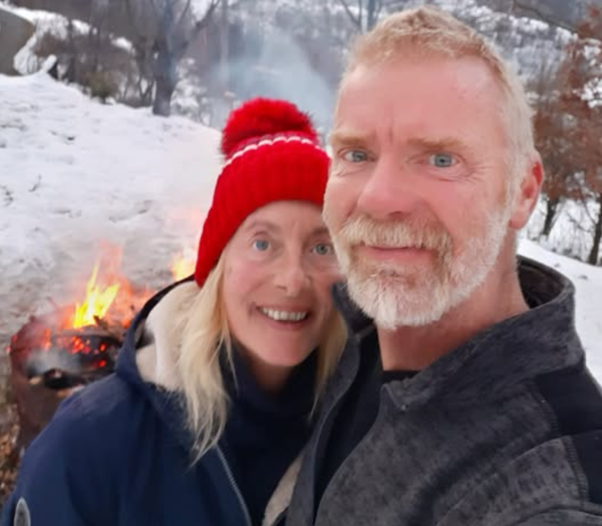
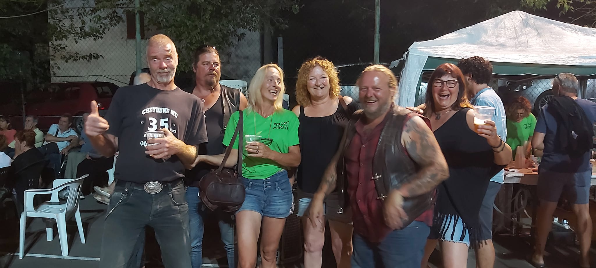
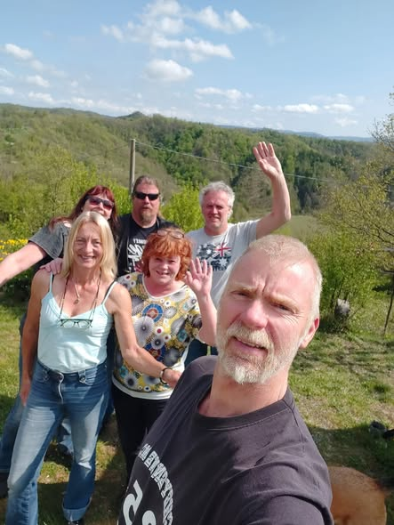
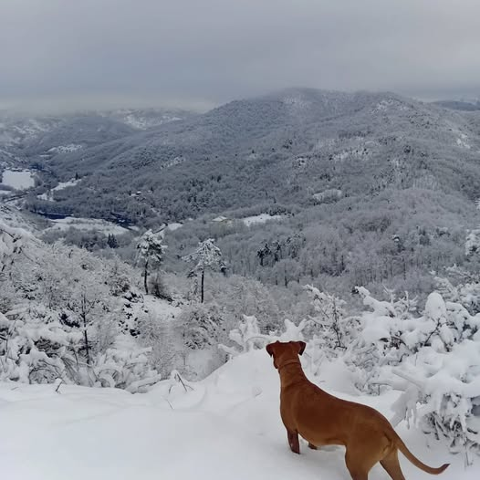

<section id="leopia">
    <div class="leopia-inner">
        <div class="leopia-photo">
            
            
            
            
        </div>
        <div class="leopia-text">
            <h2 class="host-names">LEO <span>&</span> PIA</h2>
            <p class="host-subtitle">
                <span data-lang="en" class="active">With Argo the dog</span>
                <span data-lang="it">Con il cane Argo</span>
                <span data-lang="nl">Met hond Argo</span>
                <span data-lang="de">Mit Hund Argo</span>
                <span data-lang="fy">Mei hûn Argo</span>
            </p>
            <p class="leopia-bio">
                <span data-lang="en" class="active">We are Leo and Pia. We left the Netherlands and found our paradise here in the mountains of Pareto. We brought our dog, bikes, tools and our love for Italy — and never looked back. Our mottos: a day without laughing is a day not lived, conviviality knows no time and if you have a good time; we also have one… We welcome you with open arms!</span>
                <span data-lang="it">Siamo Leo e Pia. Abbiamo lasciato i Paesi Bassi e trovato il nostro paradiso qui tra le montagne di Pareto. Abbiamo portato con noi il nostro cane, le moto, gli attrezzi e il nostro amore per l'Italia — e non ci siamo mai voltati indietro. I nostri motti: una giornata senza ridere è una giornata persa, la convivialità non conosce orari e se voi state bene, anche noi stiamo bene… Vi accogliamo a braccia aperte!</span>
                <span data-lang="nl">Wij zijn Leo en Pia. We hebben Nederland verlaten en ons paradijs gevonden hier in de bergen van Pareto. We brachten onze hond mee, onze motoren, gereedschap en onze liefde voor Italië — en keken nooit meer achterom. Onze motto's: een dag niet gelachen is een dag niet geleefd, gezelligheid kent geen tijd en als jullie een goede tijd hebben; hebben wij dat ook... We heten jullie van harte welkom!</span>
                <span data-lang="de">Wir sind Leo und Pia. Wir haben die Niederlande verlassen und unser Paradies hier in den Bergen von Pareto gefunden. Wir brachten unseren Hund, Motorräder, Werkzeug und unsere Liebe zu Italien mit — und haben nie zurückgeschaut. Unsere Mottos: Ein Tag ohne Lachen ist ein verlorener Tag, Geselligkeit kennt keine Zeit und wenn ihr eine gute Zeit habt; haben wir das auch… Wir heißen euch mit offenen Armen willkommen!</span>
                <span data-lang="fy">Wy binne Leo en Pia. Wy hawwe Nederlân ferlitten en ús paradys fûn hjir yn de bergen fan Pareto. Wy brochten ús hûn mei, motoren, ark en ús leafde foar Itaalje — en seagen nea werom. Ús motto's: in dei sûnder laitsjen is in ferlerne dei, gesellichheid ken gjin tiid en as jimme in goede tiid hawwe; hawwe wy dat ek… Wy wolkomje jimme mei iepen earmen!</span>
            </p>
            <div class="lang-flags">
                <span class="lang-tag">🇮🇹 Italiano</span>
                <span class="lang-tag">🇳🇱 Nederlands</span>
                <span class="lang-tag">🇬🇧 English</span>
                <span class="lang-tag">🇩🇪 Deutsch</span>
                <span class="lang-tag">🏴 Frysk</span>
            </div>
        </div>
    </div>
</section>